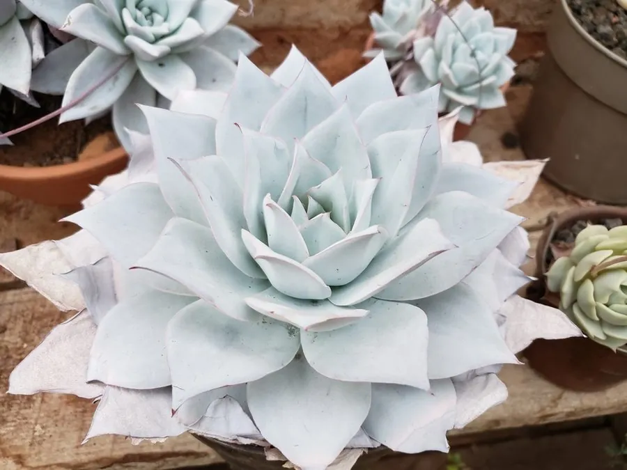

多肉植物 · 植物界
广寒宫 Echeveria cante

景天科拟石莲花属大型多肉，叶片覆厚白粉、呈蓝白色，莲座舒展如月宫仙子，原产墨西哥，是大型莲座多肉的代表。
- 分类
- 门被子植物门纲木兰纲目虎耳草目科景天科属拟石莲花属
- 栖息环境
- 墨西哥干旱山地的岩石坡地，喜光、干燥、通风
- 地理分布
- 原产墨西哥，世界各地盆栽栽培，中国各地多肉市场常见
- 保护级别
- 暂无评估
物种志
广寒宫为景天科拟石莲花属多肉植物，株高 10–20 厘米，叶片倒卵形，肉质肥厚，表面覆盖一层厚厚的白粉，呈蓝白色或灰蓝色，叶缘在光照充足时泛红，螺旋排列成舒展的莲座，直径可达 20–40 厘米。花葶自叶腋抽出，花小，橙黄色，花期夏季；果实为蓇葖果。
广寒宫原产墨西哥的干旱山地，喜阳光充足、凉爽干燥和通风良好的环境，耐旱怕积水，夏季高温时需遮阴控水。它叶形舒展、白粉厚重，日照充足时叶缘会晕染出粉红，是多肉爱好者喜爱的大型品种；白粉也是它的“防晒层”，浇水时尽量不要冲掉。栽培以颗粒土为主，春秋生长季可充分浇水，繁殖以叶插和分株为主。
形态与习性
- 株高10–20 厘米，莲座直径可达 20–40 厘米
- 花期夏季，花小，橙黄色
- 果期花后结蓇葖果
- 光照喜充足阳光，夏季高温需遮阴
- 水分耐旱，盆土干透再浇，忌积水
- 土壤颗粒为主、排水良好的矿质土
- 繁殖叶插、分株
- 主要用途大型盆栽观赏、多肉造景
趣味知识
- 广寒宫叶片覆盖厚厚的白粉，呈蓝白色，光照充足时叶缘泛粉红。
- 它是拟石莲花属中的大型品种，莲座直径可达 20–40 厘米。
- 叶面的白粉是天然的“防晒层”，浇水时尽量不要冲掉。
- 广寒宫的名称来自中国神话中的月宫，形容其清冷的蓝白色调。